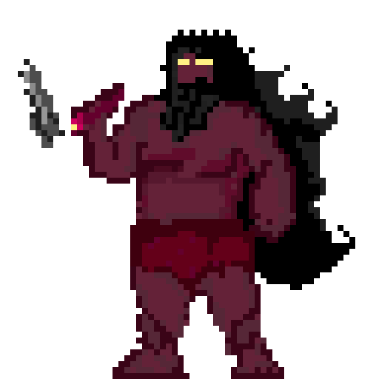

Ang Bantay ni Bathala
Ang mga Kapre, dating tagapangalaga ng mga punongkahoy, ay inalipin ng kapangyarihan ni Bathala. Sa kanilang higanteng katawan at usok na bumabalot, pinoprotektahan nila ang daan sa Kaluwalhatian. Ang kanilang lakas ay tulad ng bundok at ang kanilang mga kamay ay tila mga punong nabubuhay upang lamunin ang mga manghihimasok.
Kapre's Moveset
-
Tree Smash :
- Deals 1.2 x ATK to one enemy
-
Uproot Smash :
- Deals 1.5 x ATK to single enemies.
-
Forest Wrath
- Deals 1.6 x ATK to all enemies
Mini Boss Stats
| Total HP | ATK | MAG | DEF |
|---|---|---|---|
| 1300 | 200 | 0 | 150 |
Kampon

